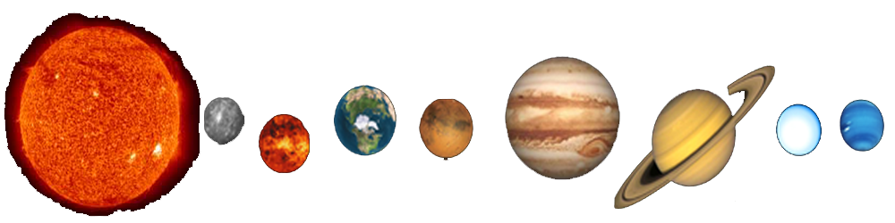

태양계
태양계는 태양을 중심으로 돌고 있는 행성계입니다. 인류가 살고 있는 지구를 포함하여 8개의 행성과 행성의 주위를 돌고 있는 위성들, 명왕성을 포함한 왜소행성들, 수백~수천만개의 소행성들과 혜성들이 태양계를 구성하고 있습니다.
Learn more

태양계는 태양을 중심으로 돌고 있는 행성계입니다. 인류가 살고 있는 지구를 포함하여 8개의 행성과 행성의 주위를 돌고 있는 위성들, 명왕성을 포함한 왜소행성들, 수백~수천만개의 소행성들과 혜성들이 태양계를 구성하고 있습니다.
Learn more